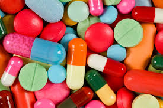

Pharmaceutical Industry

It seems that every few months some drug once claimed to be safe is yanked off the shelf after patients die. But some proponents of "alternative medicine" believe that drug companies actually conspire to keep people sick to reap profits.